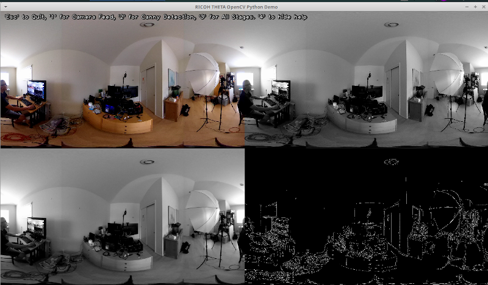
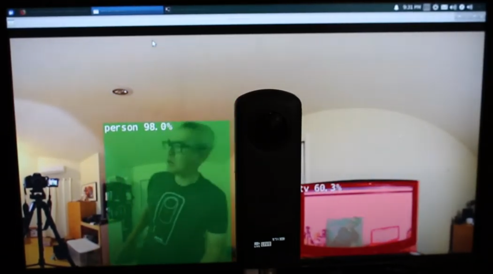
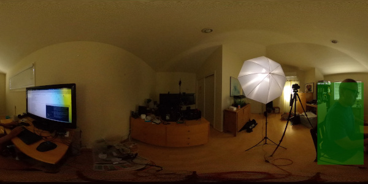
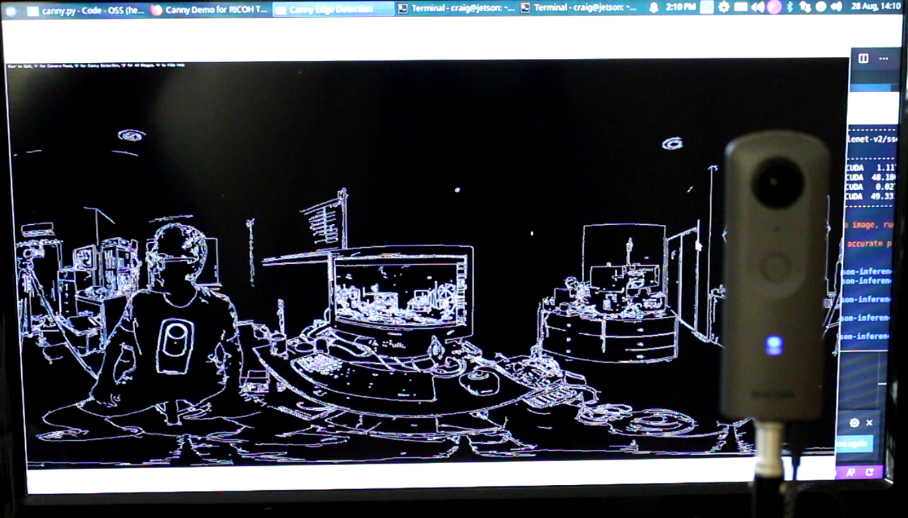
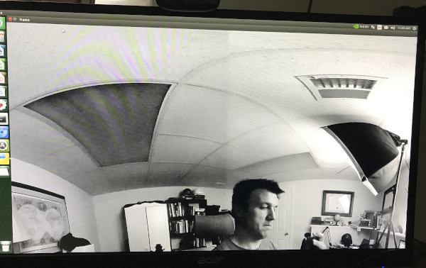
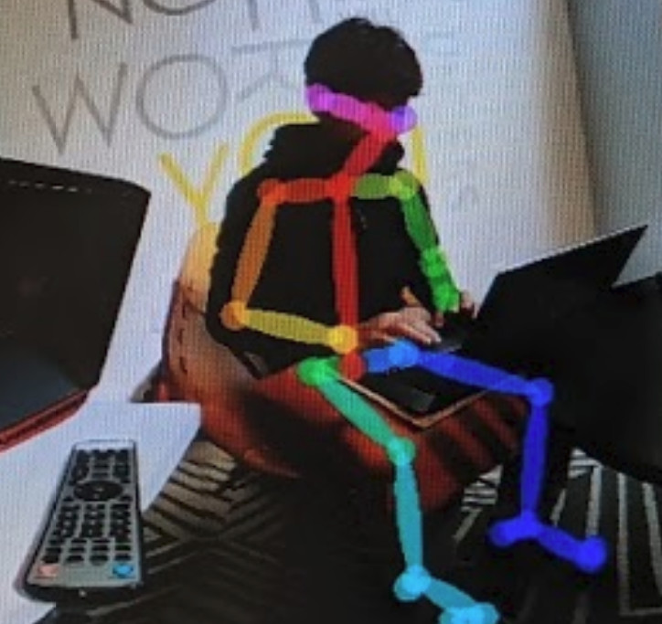

Demos
Ongoing Tests with Linux Streaming

Using Nvidia Jetson Nano live streaming from a THETA V. Processing done with Python3, OpenCV 4.4. Scroll down for code.
DetectNet

Running live on Jetson Nano with RICOH THETA Z1.
DetectNet applied to both single frame with SSD Mobilenet-v2 to assess accuracy and to live stream to assess framerate. Works good on both.
See Jetson Nano inference benchmarks.
Code is available in the at https://github.com/dusty-nv/jetson-inference
There is super small text in the green box that says, "person". The system accurately detected the only person in the image.
It is 88.6 percent confident that I am a person. Nice.

Despite the distorted view of my feet, the program does detect the human form.

Even at night, in low-light conditions with me on the side of the shutter button, the program did detect me.

However, there were many frames where I was not detected.
To proceed, you will likely need a database of fisheye or equirectangular images to build your own model.
Sample Code
import jetson.inference
import jetson.utils
net = jetson.inference.detectNet("ssd-mobilenet-v2", threshold=0.5)
camera = jetson.utils.gstCamera(1280, 720, "/dev/video0")
display = jetson.utils.glDisplay()
while display.IsOpen():
img, width, height = camera.CaptureRGBA()
detections = net.Detect(img, width, height)
display.RenderOnce(img, width, height)
display.SetTitle("RICOH THETA Detection | Network {:.0f} FPS".format(net.GetNetworkFPS()))
OpenCV Python

Works on live stream.

Procedure
- install libuvc-theta
- install libuv-theta-sample
- install v4l2loopback
- load kernel modules for v4l2loopback and verify that /dev/video0 or equivalent shows THETA stream
- run Python script with cv2
Recommend you recompile OpenCV 4.4 from source code. May take 2.5 hours if you compile on the Nano.
Simple Python cv2 Test
Frame resize test.
import cv2
cap = cv2.VideoCapture(0)
# Check if the webcam is opened correctly
if not cap.isOpened():
raise IOError("Cannot open webcam")
while True:
ret, frame = cap.read()
frame = cv2.resize(frame, None, fx=0.25, fy=0.25, interpolation=cv2.INTER_AREA)
cv2.imshow('Input', frame)
c = cv2.waitKey(1)
if c == 27:
break
cap.release()
cv2.destroyAllWindows()
Build OpenCV
One script to install OpenCV 4.3 is from AastaNV here.
The script I used is from mdegans here
Canny Edge Detection Test
- Code for OpenCV Demo with Canny from RICOH THETA V. This is the edge detection demo with the white lines on black background.
- video demo
import sys
import argparse
import cv2
import numpy as np
def parse_cli_args():
parser = argparse.ArgumentParser()
parser.add_argument("--video_device", dest="video_device",
help="Video device # of USB webcam (/dev/video?) [0]",
default=0, type=int)
arguments = parser.parse_args()
return arguments
# On versions of L4T previous to L4T 28.1, flip-method=2
# Use the Jetson onboard camera
def open_onboard_camera():
return cv2.VideoCapture(0)
# Open an external usb camera /dev/videoX
def open_camera_device(device_number):
return cv2.VideoCapture(device_number)
def read_cam(video_capture):
if video_capture.isOpened():
windowName = "main_canny"
cv2.namedWindow(windowName, cv2.WINDOW_NORMAL)
cv2.resizeWindow(windowName,1280,720)
cv2.moveWindow(windowName,0,0)
cv2.setWindowTitle(windowName,"RICOH THETA OpenCV Python Demo")
showWindow=3 # Show all stages
showHelp = True
font = cv2.FONT_HERSHEY_PLAIN
helpText="'Esc' to Quit, '1' for Camera Feed, '2' for Canny Detection, '3' for All Stages. '4' to hide help"
edgeThreshold=40
showFullScreen = False
while True:
if cv2.getWindowProperty(windowName, 0) < 0: # Check to see if the user closed the window
# This will fail if the user closed the window; Nasties get printed to the console
break;
ret_val, frame = video_capture.read();
hsv=cv2.cvtColor(frame, cv2.COLOR_BGR2GRAY)
blur=cv2.GaussianBlur(hsv,(7,7),1.5)
edges=cv2.Canny(blur,0,edgeThreshold)
if showWindow == 3: # Need to show the 4 stages
# Composite the 2x2 window
# Feed from the camera is RGB, the others gray
# To composite, convert gray images to color.
# All images must be of the same type to display in a window
frameRs=cv2.resize(frame, (640,360))
hsvRs=cv2.resize(hsv,(640,360))
vidBuf = np.concatenate((frameRs, cv2.cvtColor(hsvRs,cv2.COLOR_GRAY2BGR)), axis=1)
blurRs=cv2.resize(blur,(640,360))
edgesRs=cv2.resize(edges,(640,360))
vidBuf1 = np.concatenate( (cv2.cvtColor(blurRs,cv2.COLOR_GRAY2BGR),cv2.cvtColor(edgesRs,cv2.COLOR_GRAY2BGR)), axis=1)
vidBuf = np.concatenate( (vidBuf, vidBuf1), axis=0)
if showWindow==1: # Show Camera Frame
displayBuf = frame
elif showWindow == 2: # Show Canny Edge Detection
displayBuf = edges
elif showWindow == 3: # Show All Stages
displayBuf = vidBuf
if showHelp == True:
cv2.putText(displayBuf, helpText, (11,20), font, 1.0, (32,32,32), 4, cv2.LINE_AA)
cv2.putText(displayBuf, helpText, (10,20), font, 1.0, (240,240,240), 1, cv2.LINE_AA)
cv2.imshow(windowName,displayBuf)
key=cv2.waitKey(10)
if key == 27: # Check for ESC key
cv2.destroyAllWindows()
break ;
elif key==49: # 1 key, show frame
cv2.setWindowTitle(windowName,"Camera Feed")
showWindow=1
elif key==50: # 2 key, show Canny
cv2.setWindowTitle(windowName,"Canny Edge Detection")
showWindow=2
elif key==51: # 3 key, show Stages
cv2.setWindowTitle(windowName,"Camera, Gray scale, Gaussian Blur, Canny Edge Detection")
showWindow=3
elif key==52: # 4 key, toggle help
showHelp = not showHelp
elif key==44: # , lower canny edge threshold
edgeThreshold=max(0,edgeThreshold-1)
print ('Canny Edge Threshold Maximum: ',edgeThreshold)
elif key==46: # , raise canny edge threshold
edgeThreshold=edgeThreshold+1
print ('Canny Edge Threshold Maximum: ', edgeThreshold)
elif key==74: # Toggle fullscreen; This is the F3 key on this particular keyboard
# Toggle full screen mode
if showFullScreen == False :
cv2.setWindowProperty(windowName, cv2.WND_PROP_FULLSCREEN, cv2.WINDOW_FULLSCREEN)
else:
cv2.setWindowProperty(windowName, cv2.WND_PROP_FULLSCREEN, cv2.WINDOW_NORMAL)
showFullScreen = not showFullScreen
else:
print ("camera open failed")
if __name__ == '__main__':
arguments = parse_cli_args()
print("Called with args:")
print(arguments)
print("OpenCV version: {}".format(cv2.__version__))
print("Device Number:",arguments.video_device)
if arguments.video_device==0:
video_capture=open_onboard_camera()
else:
video_capture=open_camera_device(arguments.video_device)
read_cam(video_capture)
video_capture.release()
cv2.destroyAllWindows()
OpenPose
Works on live stream with Jetpack 4.3, not 4.4.
